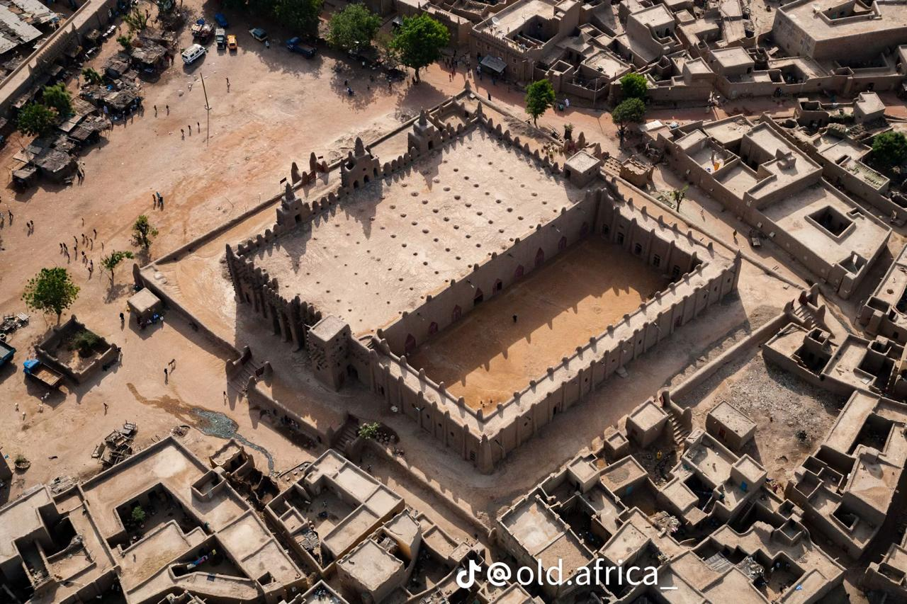
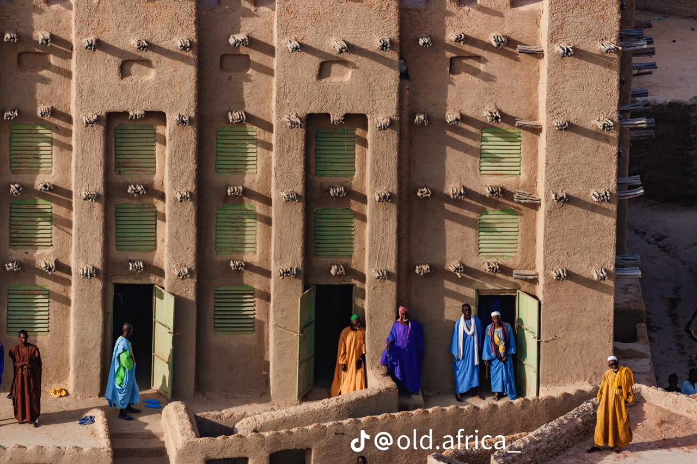
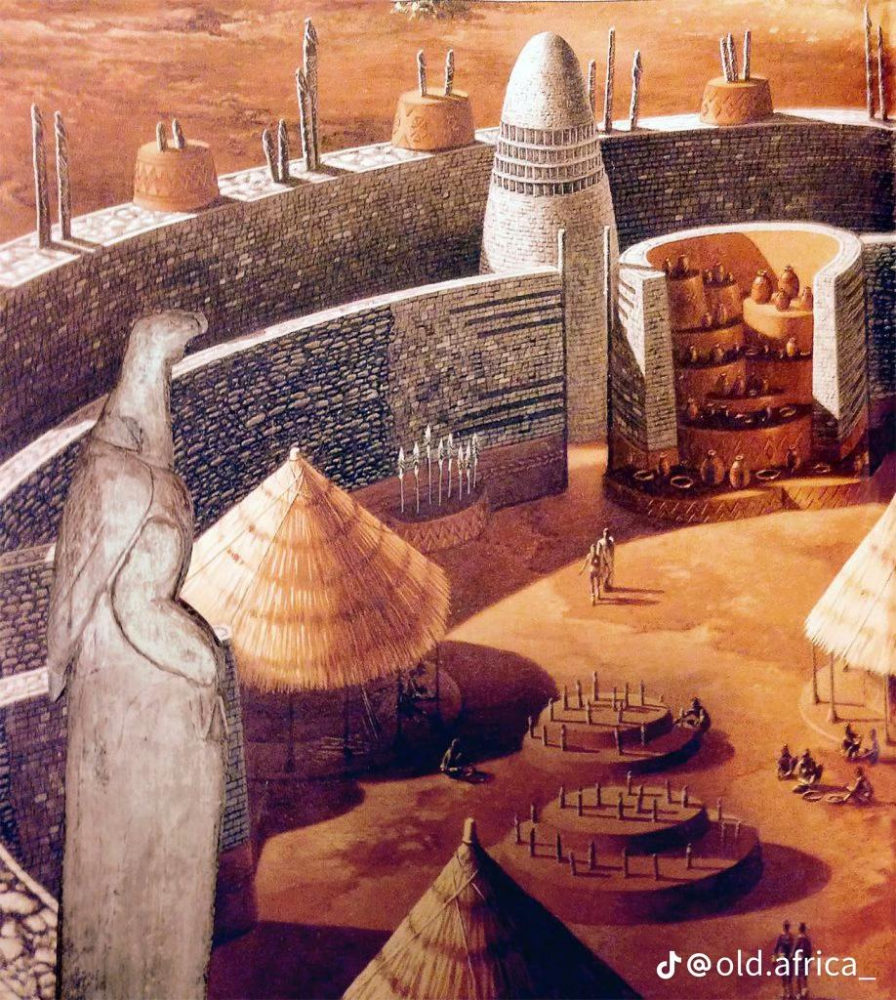

Afri Furniture and Art was officially founded in 2025, but its roots stretch back to 2018, when a vision began to take shape in the heart of a young Black girl from Johannesburg. While researching the histories of Congo, Sudan, and other parts of our continent, I came to a realization: the world learned luxury from Africa.
From the richness of our melanin to the wealth of our land, gold, diamonds, ivory and coal. Africa has always been the blueprint of opulence. Long before Western fashion houses like Chanel and Gucci claimed the word “luxury,” our people lived it. We were kings and queens, builders of castles, artisans of beauty, and stewards of abundance. Luxury is not foreign to us it's us.
But colonization tried to rewrite that truth. It convinced many of us that proximity to whiteness equates to wealth. Yet, in reality, luxury has always been deeply African: in our patterns, in our heritage, in our boldness. Africa is maximalist by nature from the vibrant fabrics of our traditional wear to the extraordinary features of our people. We are extra, unapologetically so.
Afri Furniture and Art is my way of reclaiming that truth. I am both South African and Mozambican, a child of two lands that are not separated by oceans but connected by rivers. I grew up creating—starting carpentry as a teenager at 16, crafting cupboards and experimenting with wood. Art has always been my language, whether through paint, sculpture, or design. And in every form, I see reflections of the art of our ancestors—from the cave paintings of the Khoisan, made with oils and even their own blood, to the intricate beadwork, masks, pottery, jewelry, and textiles that have long told our stories.
This brand is a bridge between heritage and modern living. It is post-colonial Africa reimagined a return to our royalty, our extravagance, and our originality. Every piece we make is not just furniture or décor, but a celebration of who we are.
What We Offer
- Furniture: Wooden chairs, cupboards, bed frames, dining tables, sofas, and more.
- Art: Oil and acrylic paintings, sculptures, and custom wooden frames for canvases.
- Luxury Craft: Furniture and décor infused with gold detailing, carved woodwork, and bespoke design.
- Interiors: Wallpapers, statement pieces, and full interior design concepts that embody African maximalism.
Every item is crafted to embody heritage, richness, and artistry, reminding the world that Africa is, and always has been, luxury.